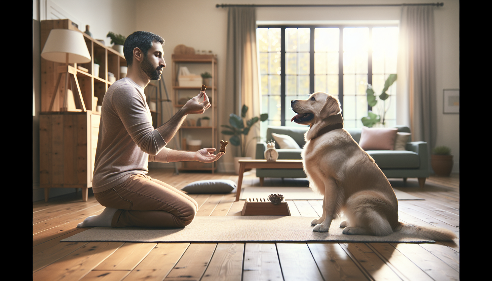

If you have ever felt like dog training needs huge blocks of time, perfect timing, or endless patience, here is the good news: it does not. In fact, one of the most effective ways to build a well-mannered, confident dog is with short, consistent practice. A 15-minute daily dog training routine can improve focus, strengthen your bond, reduce problem behaviors, and help your dog succeed in real life.
This approach works for new puppy parents, first-time dog owners, and people bringing home a rescue dog who needs structure and trust. It also works for adult dogs who missed early training or need a reset. The secret is not intensity. It is consistency, clarity, and reinforcement.
Science-backed dog training relies on repetition, predictable outcomes, and rewards that matter to the dog. Short sessions help dogs stay engaged, avoid frustration, and learn faster. Instead of waiting for the perfect hour-long class, you can create meaningful progress every single day in just 15 minutes.
Below is a simple daily routine you can start today. It is flexible, realistic, and designed to fit busy schedules while still producing lasting results.
Dogs learn best in small, successful repetitions. Long training sessions often lead to mental fatigue, sloppy responses, and frustration for both dog and handler. A short routine keeps energy high and makes it easier to end on a win.
There is also a behavior benefit: daily practice creates habits. When your dog rehearses checking in with you, settling on cue, and responding to basic commands every day, those skills become easier to access in distracting situations. This is especially important for puppies, adolescents, and rescue dogs who are still adjusting to a new environment.
A 15-minute routine also encourages owners to stay consistent. If a plan feels manageable, you are more likely to follow through. And in dog training, consistency beats occasional marathon sessions every time.
You do not need fancy equipment. Keep it simple and set yourself up for success.
Choose rewards that match the challenge. For easy skills at home, kibble may be enough. For rescue dogs, young puppies, or distracted dogs, use something better like small pieces of chicken or cheese. Reward-based training is not bribery. It is communication. It tells your dog exactly which behavior earned success.
If your dog is very energetic, do one or two minutes of calm movement first, like sniffing in the yard or a slow leash walk. If your dog is nervous, start in the quietest place possible and keep your voice relaxed and upbeat.
Here is the full routine. You can use it as written or adapt the timing to your dog’s age, energy, and skill level.
Start by rewarding your dog for engaging with you. Say their name once. When they look at you, mark and reward. Take a few steps away. When they follow, reward again. This warm-up creates attention before you ask for anything harder.
Pick one skill to practice for a few minutes. Good options include sit, down, touch, come, or leash position. Keep repetitions short and successful. If your dog struggles, make it easier right away. Training should feel like a game, not a test.
Now practice a useful everyday behavior such as wait at the door, go to mat, polite greetings, leave it, or settle. These skills often matter more than flashy tricks because they improve daily life and prevent common behavior problems.
Ask for simple behaviors that help your dog pause and think. Examples include a brief stay, eye contact before getting a treat, or waiting calmly before the leash goes on. For shy or rescue dogs, this section can include confidence-building games like stepping onto a mat, exploring a cardboard box, or following a treat trail.
Take one skill into a slightly more distracting setting. Move to another room, the front porch, the yard, or a quiet sidewalk. Dogs do not automatically generalize skills, so this step is important. A sit in the kitchen is not always the same as a sit near the front door.
End with an easy win and a decompression moment. Reward your dog for lying on their mat, taking a deep breath, or calmly sitting with you. This teaches that training does not always end in excitement. Calmness is a skill too.
You do not need to teach everything every day. Rotate skills so your dog stays engaged and you build a balanced foundation.
Here are excellent behaviors to include across the week:
For puppies, focus on attention, handling, recall, and calmness around exciting things. For rescue dogs, prioritize predictability, trust, and confidence-building. For adolescent dogs, spend extra time on impulse control and practicing known cues around distractions.
Even a great routine can stall if a few common issues creep in. The good news is they are easy to fix.
If your dog seems distracted, frustrated, or overexcited, shorten the session even more. Three excellent minutes are better than 15 messy ones.
The routine is universal, but the way you apply it should match the dog in front of you.
For puppies: Keep sessions playful and very short within the 15-minute window. Use more frequent rewards, lower expectations, and lots of rest breaks. Puppies are learning how to learn. Focus on confidence, handling, social exposure, and preventing bad habits before they start.
For rescue dogs: Build trust first. A newly adopted dog may need days or weeks before they can fully focus. Use gentle reinforcement, predictable patterns, and low-pressure goals. Celebrate small wins like choosing to approach, making eye contact, or settling on a mat.
For adult dogs: Do not assume it is too late. Adult dogs can learn beautifully with clear communication and consistency. If there is a history of pulling, jumping, barking, or ignoring cues, daily short sessions can replace those habits with better ones over time.
If your dog shows fear, aggression, or severe anxiety, work with a qualified positive reinforcement trainer or veterinary behavior professional. A daily routine helps, but some cases need individual support.
Transformation rarely happens in one dramatic moment. It happens through tiny improvements that add up. Track what you practice and what improves each week. You can keep notes on your phone or use a simple checklist.
Within a few weeks, many owners notice better focus, faster responses, calmer behavior in the home, and more confidence during walks and daily routines. The biggest change is often in the relationship itself. Your dog starts seeing you as clear, rewarding, and safe to follow.
That is the real power of a 15-minute daily dog training routine. It does not just teach commands. It creates communication, trust, and a shared language you can use for life.
If you want a dog who listens better, settles more easily, and feels more connected to you, do not wait for the perfect time to start training. Start small. Start today. Fifteen focused minutes a day can transform behavior far more effectively than occasional long sessions.
Keep it positive, keep it clear, and keep it consistent. Whether you are raising a puppy, helping a rescue adjust, or teaching an older dog new skills, this simple routine can build lasting results one day at a time.
Get our full Dog Training eBook series — new titles added weekly.